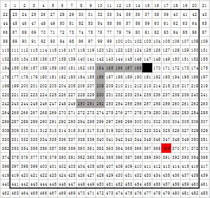

贪吃蛇
贪吃蛇是一款非常经典的手机游戏，相信每个人都玩过这个游戏。下面我们利用APP INVENTOR 2来制作一款自己的贪吃蛇。
游戏运行界面：
界面设计
界面设计比较简单，根据上图布局添加组件
组件及属性（其他属性都默认就可以）：
| 名称1 | 名称2 | 宽度 | 高度 | 窗口大小 | 水平对齐 | 间隔 |
|---|---|---|---|---|---|---|
| 画布1 | 320 | 320 | 固定大小 | |||
| 水平布局1 | 充满 | 充满 | 居中 | |||
| 上按钮 | 30% | 充满 | ||||
| 水平布局2 | 充满 | 充满 | 居中 | |||
| 左按钮 | 30% | 充满 | ||||
| 开始按钮 | 30% | 充满 | ||||
| 右按钮 | 30% | 充满 | ||||
| 水平布局3 | 充满 | 充满 | 居中 | |||
| 下按钮 | 30% | 充满 | ||||
| 计时器 | 500 |
游戏代码：
几个自定义过程：
将画布分成20*20的小格子（上图中粗线方框区域），每个格子高16宽16。给每个格子编号。在显示区域之外也加上一层并编号，是为了更加方便的判断蛇头是否出界。行号（列号）从0开始到21结束。 
根据编号求所在行或者列，根据行和列求出所在位置编号。
几个全局变量：
蛇身位置：记录当前状态下所有身体占据的格子位置。游戏开始时，蛇身位置列表（从蛇头到蛇尾的顺序）设为（250,249,248）
当前方向：取值为1到4。 1代表向右，2是向上，3是向左，4是向下。
偏移列表：分别是蛇头向右、向上、向左、向下时，新位置编号相对当前位置编号的变化。
显示蛇身
我们利用画布的画线方法，根据所在的位置编号来画出一个方框，并给他不同的颜色。灰色是蛇身，黑色是蛇头，红色是鸡蛋。
线宽设为14，x1和x2分别减去15和1，是为了每个方框中间空出2个单位。
点击开始按钮，运行后的画出的效果如图：
让蛇身动起来
我们以向右移动方向为例。当前蛇身位置（250,249,248），250是蛇头位置，若向右移动，就把右边的251加入列表第一项的位置，同时把尾巴的位置248从列表中删除，这样蛇身位置就变成了（251,250,249），再移动一格，就变成了（252,251,250）.
这样，每次移动，就是把蛇身位置列表的最后一个删除，在列表第一位置插入一个新的编号。这个新的编号是根据当前的方向决定的。

蛇头新位置：根据当前方向，求出蛇头的偏移量，加上当前的位置，就是新位置。
每次计时器计时，把画布清空，重新计算蛇身位置，并根据新位置画出蛇身。 当然，现在蛇只能向右移动，且可以穿越边界。下面加上修改方向的代码
改变方向
因为蛇不允许原地180度转向，我们加一个判断，如果方向是4（向下），那么按向上的按钮就没有变化。只有在不等于4的时候，向上按钮才起作用。其他方向同理。
禁止穿越边界
只要判断蛇头位置是否出界就可以了。如果蛇头的所在行或者列等于0或者21，就说明出界了（参考上面的编号图）。

我们在计时器的计时事件中加上一个判断，如果出界，就停止计时，并给出提示。
显示鸡蛋。
吃到鸡蛋
将移动蛇身的过程修改一下，加上判断语句。如果蛇头的新位置等于鸡蛋位置,就是吃到鸡蛋了，就把鸡蛋重新移动一个位置，并且不要删除蛇尾的位置，就相当于把鸡蛋的位置加到了原来蛇尾的位置了。如果没有碰到鸡蛋，就要把蛇尾删掉。

碰到自己
现在基本的功能都实现了，就差一个检测是否碰到自己身体了。 继续修改 移动蛇身 过程。如果蛇身位置包含蛇头要去的新位置，说明碰到自己的身体了，就要游戏结束。
附加功能
至此所有基本功能都实现了。 有兴趣的可以自己添加以下功能：
- 游戏计时，
- 吃到鸡蛋加分并显示，
- 每隔一定时间没有吃到鸡蛋，鸡蛋就变换位置，
- 鸡蛋新出现的位置不能出现在蛇的身体上，
- 添加障碍物，
- 修改为图像精灵版本（蛇头、蛇身、蛇尾用不同的图片代替）
这个是写的图像精灵版本的：